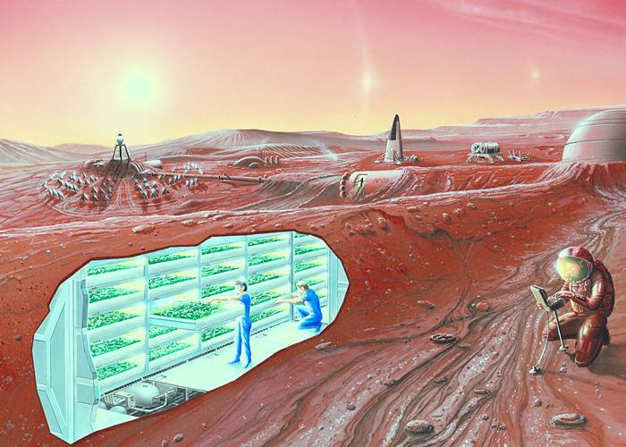
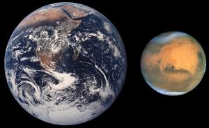

Мрас
Про Марс
Марс - четверта за віддаленості від Сонця і сьома за розмірами планета Сонячної системи; маса планети становить 10,7% маси Землі. Названа на честь Марса - давньоримського бога війни, відповідного давньогрецького Аресові.
Іноді Марс називають «червоною планетою» через червонуватого відтінку поверхні, придаваемого їй мінералом маггеміта - γ-оксидом заліза (III). Марс - планета земної групи з розрідженою атмосферою (тиск у поверхні в 160 разів менше земного) Особливістю поверхневого рельєфу Марса можна вважати ударні кратери на зразок місячних, а також вулкани, долини, пустелі і полярні льодовикові шапки на зразок земних.
Марс — планета земного типу з розрідженою атмосферою. На Марсі є метеоритні кратери, як на Місяці, вулкани, долини і пустелі, подібні до земних. Тут розташована гора Олімп (22 456 м), найвища відома гора в Сонячній системі, і Долини Марінера — величезна рифтоподібна система каньйонів. На додаток до особливостей — період обертання Марса і сезонні цикли також подібні до земних.
Марс — невелика планета, більша за Меркурій, але майже вдвічі менша від Землі за діаметром. Марс має екваторіальний радіус 3396 км і середній полярний радіус 3379 км (обидва значення точно визначені космічним апаратом «Mars Global Surveyor», який почав свою місію на орбіті навколо планети 1999 року). Маса Марса становить 6,418×1023 кг, що вдесятеро менше за масу Землі, а прискорення вільного падіння на його поверхні — 3,72 м/с². Це означає, що обʼєкти на Марсі важать лише третину своєї земної ваги.
Марс має криваво-червоний колір, яким він завдячує мінералу Маґгеміту — γ-оксиду заліза(III). Через цей колір його іноді називають Червоною планетою. Марс довго асоціювали з війною і кровопролиттям, і тому його назвали на честь римського бога війни. У планети є два супутники, Фобос (грец. «Страх») і Деймос («Жах»), які були названі на честь двох синів Ареса і Афродіти (римські варіанти назв — Марс і Венера відповідно).
Марс зараз

Наразі немає наукових доказів існування життя на Марсі. Хоча припускають, що воно там може бути. Ще до початку польотів на Марс він був першим кандидатом на виявлення там позаземного життя. На Марсі було знайдено зразки льоду, що є однією з умов існування життя. За останніми відомостями, в минулому на Марсі існувала вода в рідкому стані, поверхню планети вкривали моря. Однак внаслідок нез'ясованих досі причин вона практично зникла. Цілком можливо, що ще кілька мільйонів років тому клімат на Марсі був вологішим. Доказом цього слугує рельєф планети. Одна з версій втрати Марсом води — це результат дії сонячного вітру.
Група геофізиків з Канади і США пояснила наявність у давнину рідкої води на поверхні Марса. На думку фахівців, для цього необхідна тепла і щільна газова оболонка, яка забезпечувалася викидами з літосфери в гідросферу метану. За словами вчених, періоди потепління були пов'язані з надходженням парникового газу і тривали близько мільйона років.
Освоєння
Без захисного спорядження людина не зможе вижити на поверхні Марса й декількох хвилин. Однак, у порівнянні із умовами на спекотних Меркурії та Венері, холодних зовнішніх планетах та позбавлених атмосфери Місяці та астероїдах, умови на Марсі видаються придатнішими для освоєння планети людиною. На Землі є місця, у яких природні умови багато у чому схожі на марсіанські.
Атмосферний тиск на висоті 34668 метрів — рекордна за висотою точка, якої досягла повітряна куля із командою на борту (травень 1961 р.) — приблизно відповідає тиску на поверхні Марса.
Вкрай низькі температури в Арктиці та Антарктиді рівні середній температурі на Марсі (−46 °C). Також на Землі є пустелі, зовні схожі із марсіанським ландшафтом.
Колонізація
Спільні із Землею риси

Доба на Марсі триває 24 години 39 хвилин 35,244 секунди, що дуже близько до земних умов.
Площа поверхні Марса становить 28,4 % земної — трохи менше площі суші на Землі (що становить 29,2 % від усієї земної поверхні).
Нахил осі Марса до площини екліптики становить 25,19°, а земної — 23,44°. Внаслідок чого на Марсі, як і на Землі, існує зміна пір року, хоча вона і відбувається майже удвічі довше, оскільки марсіанський рік у 1,88 раза довше земного.
На Марсі є атмосфера. Не зважаючи на те, що її щільність становить лише 0,007 земної, вона дає мінімальний початковий захист від сонячної радіації, а також була успішно використана для аеродинамічного гальмування космічного літального апарату.
Останні дослідження НАСА підтвердили наявність води на Марсі[1]. Таким чином, умови на Марсі можуть виявитись достатніми для підтримання життя.
Параметри марсіанського ґрунту (співвідношення pH, наявність необхідних для рослин хімічних елементів, та деякі інші характеристики) близькі до земних, і на марсіанському ґрунті теоретично можливо вирощувати рослини.
Деякі матеріали можна не доставляти із Землі, а виробляти на Марсі in situ. Наприклад, із діоксиду вуглецю, екстрагованого із марсіанської атмосфери, завдяки реакції Сабатьє можна отримати метан, що є пальним для космічних апаратів та ракет. Окисник (кисень) отримують електролізом води.
Відмінні від Землі риси

Сила тяжіння на Марсі приблизно у 2,63 раза менша (0,38 g), ніж на Землі. Досі невідомо, чи достатньо цього для уникнення проблем, пов'язаних із невагомістю.
Температура поверхні Марса значно нижча за земну. Максимальна становить +30 °C (опівдні на екваторі), мінімальна — −123 °C (взимку на полюсах). При цьому температура приповерхневого шару атмосфери — завжди нижче нуля.
На поверхні Марса немає води у рідкому агрегатному стані.
Зважаючи на те, що Марс знаходиться далі від Сонця, кількість сонячної енергії, що досягає його поверхні, приблизно вдвічі менша, ніж на Землі.
Орбіта Марса має більший ексцентриситет, що збільшує річні коливання температури та кількості сонячної енергії.
Атмосферний тиск на Марсі надто малий для того, щоб люди могли вижити без пневмокостюму. Житлові приміщення на Марсі доведеться обладнувати шлюзами на кшталт тих, що встановлюються на космічних кораблях, які могли б підтримувати земний атмосферний тиск.
Марсіанська атмосфера складається в основному із вуглекислого газу (95 %). Тому, не зважаючи на її низьку щільність, парціальний тиск CO2 на поверхні Марса у 52 рази вищий, ніж на Землі, що, можливо, дозволить підтримувати рослинність.
У Марса є два природні супутники, Фобос і Деймос. Вони набагато менші і ближчі до планети, ніж Місяць до Землі. Ці супутники можуть виявитися корисними при перевірці засобів колонізації астероїдів.
Магнітне поле Марса слабше земного приблизно у 800 разів.
Північний полюс на Марсі вказує на сузір'я Лебедя, а не на Малу Ведмедицю.
Виявлення апаратом Фенікс, що приземлився поблизу Північного полюсу Марса у 2008 році, у ґрунті перхлоратів ставить під сумнів можливість вирощування у марсіанському ґрунті земних рослин без додаткових експериментів.
Придатність для освоєння
Без захисного спорядження людина не зможе вижити на поверхні Марса й декількох хвилин. Однак, у порівнянні із умовами на спекотних Меркурії та Венері, холодних зовнішніх планетах та позбавлених атмосфери Місяці та астероїдах, умови на Марсі видаються придатнішими для освоєння планети людиною. На Землі є місця, у яких природні умови багато у чому схожі на марсіанські. Атмосферний тиск на висоті 34668 метрів — рекордна за висотою точка, якої досягла повітряна куля із командою на борту (травень 1961 р.) — приблизно відповідає тиску на поверхні Марса. Вкрай низькі температури в Арктиці та Антарктиді рівні середній температурі на Марсі (−46 °C). Також на Землі є пустелі, зовні схожі із марсіанським ландшафтом.
Інформацію взято з джерел:
https://uk.wikipedia.org/wiki/%D0%9A%D0%BE%D0%BB%D0%BE%D0%BD%D1%96%D0%B7%D0%B0%D1%86%D1%96%D1%8F_%D0%9C%D0%B0%D1%80%D1%81%D0%B0#%D0%A1%D0%BF%D0%BE%D1%81%D0%BE%D0%B1%D0%B8_%D1%82%D0%B5%D1%80%D0%B0%D1%84%D0%BE%D1%80%D0%BC%D1%83%D0%B2%D0%B0%D0%BD%D0%BD%D1%8F_%D0%9C%D0%B0%D1%80%D1%81%D0%B0
https://ru.wikipedia.org/wiki/%D0%9A%D0%BE%D0%BB%D0%BE%D0%BD%D0%B8%D0%B7%D0%B0%D1%86%D0%B8%D1%8F_%D0%9C%D0%B0%D1%80%D1%81%D0%B0
https://uk.wikipedia.org/wiki/%D0%9C%D0%B0%D1%80%D1%81_(%D0%BF%D0%BB%D0%B0%D0%BD%D0%B5%D1%82%D0%B0)